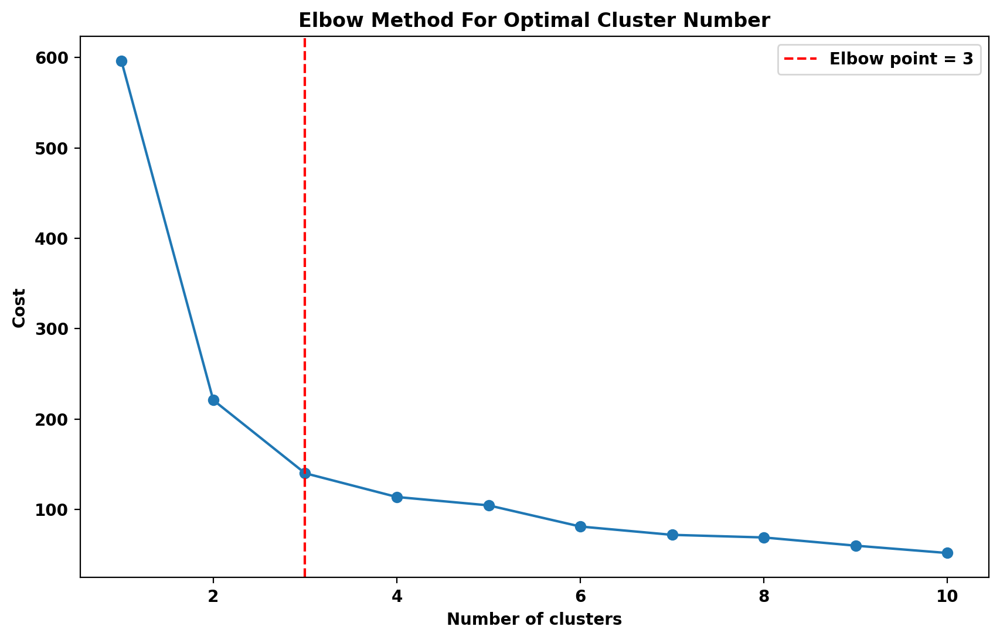
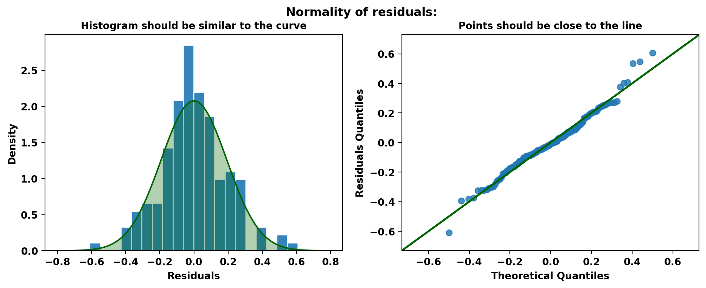
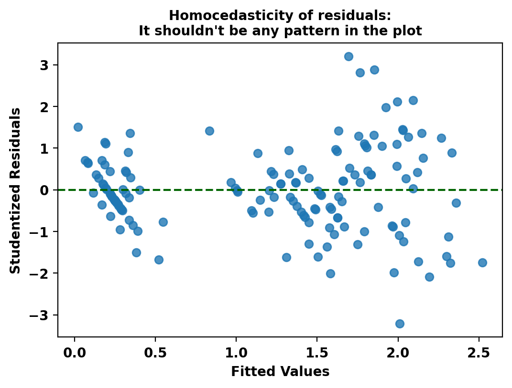
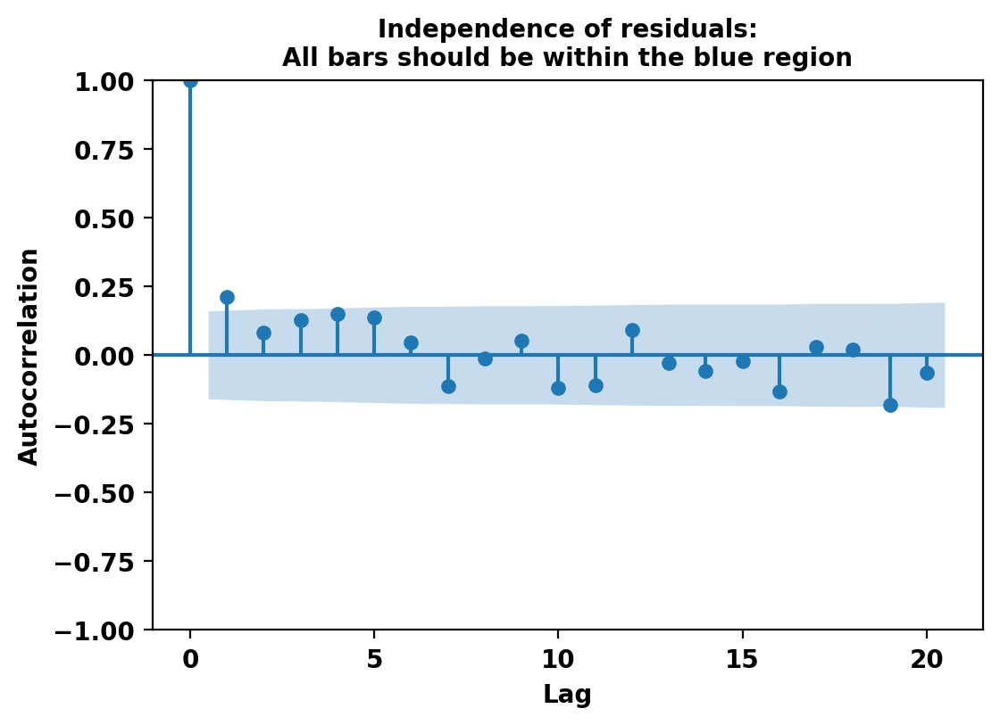

<!DOCTYPE html>
<html class="writer-html5" lang="en" >
<head>
  <meta charset="utf-8" /><meta name="generator" content="Docutils 0.18.1: http://docutils.sourceforge.net/" />

  <meta name="viewport" content="width=device-width, initial-scale=1.0" />
  <title>Getting Started &mdash; ESTYP Documentation 0.1.0 documentation</title>
      <link rel="stylesheet" href="_static/pygments.css" type="text/css" />
      <link rel="stylesheet" href="_static/css/theme.css" type="text/css" />
      <link rel="stylesheet" href="_static/jupyter-sphinx.css" type="text/css" />
      <link rel="stylesheet" href="_static/thebelab.css" type="text/css" />
  <!--[if lt IE 9]>
    <script src="_static/js/html5shiv.min.js"></script>
  <![endif]-->
  
        <script src="_static/jquery.js"></script>
        <script src="_static/_sphinx_javascript_frameworks_compat.js"></script>
        <script data-url_root="./" id="documentation_options" src="_static/documentation_options.js"></script>
        <script src="_static/doctools.js"></script>
        <script src="_static/sphinx_highlight.js"></script>
        <script src="_static/thebelab-helper.js"></script>
        <script src="https://cdnjs.cloudflare.com/ajax/libs/require.js/2.3.4/require.min.js"></script>
        <script src="https://cdn.jsdelivr.net/npm/@jupyter-widgets/html-manager@^1.0.1/dist/embed-amd.js"></script>
        <script async="async" src="https://cdn.jsdelivr.net/npm/mathjax@3/es5/tex-mml-chtml.js"></script>
    <script src="_static/js/theme.js"></script>
    <link rel="index" title="Index" href="genindex.html" />
    <link rel="search" title="Search" href="search.html" />
    <link rel="next" title="The cluster module" href="cluster.html" />
    <link rel="prev" title="Instalation" href="instalation.html" /> 
</head>

<body class="wy-body-for-nav"> 
  <div class="wy-grid-for-nav">
    <nav data-toggle="wy-nav-shift" class="wy-nav-side">
      <div class="wy-side-scroll">
        <div class="wy-side-nav-search" >

          
          
          <a href="index.html" class="icon icon-home">
            ESTYP Documentation
          </a>
<div role="search">
  <form id="rtd-search-form" class="wy-form" action="search.html" method="get">
    <input type="text" name="q" placeholder="Search docs" aria-label="Search docs" />
    <input type="hidden" name="check_keywords" value="yes" />
    <input type="hidden" name="area" value="default" />
  </form>
</div>
        </div><div class="wy-menu wy-menu-vertical" data-spy="affix" role="navigation" aria-label="Navigation menu">
              <p class="caption" role="heading"><span class="caption-text">Contents:</span></p>
<ul class="current">
<li class="toctree-l1"><a class="reference internal" href="instalation.html">Instalation</a></li>
<li class="toctree-l1 current"><a class="current reference internal" href="#">Getting Started</a><ul>
<li class="toctree-l2"><a class="reference internal" href="#model-selection">Model Selection</a></li>
<li class="toctree-l2"><a class="reference internal" href="#means-equality-between-two-samples">Means equality between two samples</a></li>
<li class="toctree-l2"><a class="reference internal" href="#equality-in-variances-of-two-samples">Equality in variances of two samples</a></li>
<li class="toctree-l2"><a class="reference internal" href="#correlation-between-two-samples">Correlation between two samples</a></li>
<li class="toctree-l2"><a class="reference internal" href="#proportions-testing">Proportions testing</a></li>
<li class="toctree-l2"><a class="reference internal" href="#searching-optimal-number-of-clusters">Searching Optimal Number of Clusters</a></li>
<li class="toctree-l2"><a class="reference internal" href="#linear-regression-model-assumptions">Linear Regression Model Assumptions</a></li>
</ul>
</li>
<li class="toctree-l1"><a class="reference internal" href="cluster.html">The <cite>cluster</cite> module</a></li>
<li class="toctree-l1"><a class="reference internal" href="linear_model.html">The <cite>linear_model</cite> module</a></li>
<li class="toctree-l1"><a class="reference internal" href="testing.html">The <cite>testing</cite> module</a></li>
</ul>

        </div>
      </div>
    </nav>

    <section data-toggle="wy-nav-shift" class="wy-nav-content-wrap"><nav class="wy-nav-top" aria-label="Mobile navigation menu" >
          <i data-toggle="wy-nav-top" class="fa fa-bars"></i>
          <a href="index.html">ESTYP Documentation</a>
      </nav>

      <div class="wy-nav-content">
        <div class="rst-content">
          <div role="navigation" aria-label="Page navigation">
  <ul class="wy-breadcrumbs">
      <li><a href="index.html" class="icon icon-home" aria-label="Home"></a></li>
      <li class="breadcrumb-item active">Getting Started</li>
      <li class="wy-breadcrumbs-aside">
            <a href="_sources/getting_started.rst.txt" rel="nofollow"> View page source</a>
      </li>
  </ul>
  <hr/>
</div>
          <div role="main" class="document" itemscope="itemscope" itemtype="http://schema.org/Article">
           <div itemprop="articleBody">
             
  <section id="getting-started">
<h1>Getting Started<a class="headerlink" href="#getting-started" title="Permalink to this heading"></a></h1>
<p><strong>First</strong>: <a class="reference external" href="./instalation.html">Install</a> ESTYP library if you haven’t already:</p>
<p>Here are some examples of how to use the library:</p>
<section id="model-selection">
<h2>Model Selection<a class="headerlink" href="#model-selection" title="Permalink to this heading"></a></h2>
<p>We will now select a logistic regression model that best classifies the versicolor category.</p>
<p>First, we load the data:</p>
<div class="jupyter_cell jupyter_container docutils container">
<div class="cell_input code_cell docutils container">
<div class="highlight-ipython3 notranslate"><div class="highlight"><pre><span></span><span class="kn">from</span> <span class="nn">sklearn.datasets</span> <span class="kn">import</span> <span class="n">load_iris</span>
<span class="kn">import</span> <span class="nn">pandas</span> <span class="k">as</span> <span class="nn">pd</span>

<span class="n">content</span> <span class="o">=</span> <span class="n">load_iris</span><span class="p">()</span>

<span class="n">data</span> <span class="o">=</span> <span class="n">pd</span><span class="o">.</span><span class="n">DataFrame</span><span class="p">(</span><span class="n">content</span><span class="o">.</span><span class="n">data</span><span class="p">,</span> <span class="n">columns</span><span class="o">=</span><span class="p">[</span><span class="sa">f</span><span class="s2">&quot;x</span><span class="si">{</span><span class="n">i</span><span class="o">+</span><span class="mi">1</span><span class="si">}</span><span class="s2">&quot;</span> <span class="k">for</span> <span class="n">i</span> <span class="ow">in</span> <span class="nb">range</span><span class="p">(</span><span class="n">content</span><span class="o">.</span><span class="n">data</span><span class="o">.</span><span class="n">shape</span><span class="p">[</span><span class="mi">1</span><span class="p">])])</span>
<span class="n">data</span><span class="p">[</span><span class="s2">&quot;y&quot;</span><span class="p">]</span> <span class="o">=</span> <span class="p">(</span><span class="n">content</span><span class="o">.</span><span class="n">target</span> <span class="o">==</span> <span class="mi">1</span><span class="p">)</span><span class="o">.</span><span class="n">astype</span><span class="p">(</span><span class="nb">int</span><span class="p">)</span>
<span class="nb">print</span><span class="p">(</span><span class="n">data</span><span class="o">.</span><span class="n">head</span><span class="p">())</span>
</pre></div>
</div>
</div>
<div class="cell_output docutils container">
<div class="output stream highlight-none notranslate"><div class="highlight"><pre><span></span>    x1   x2   x3   x4  y
0  5.1  3.5  1.4  0.2  0
1  4.9  3.0  1.4  0.2  0
2  4.7  3.2  1.3  0.2  0
3  4.6  3.1  1.5  0.2  0
4  5.0  3.6  1.4  0.2  0
</pre></div>
</div>
</div>
</div>
<p>Then, we run a model selection process with forward and both (forward and backward) steps:</p>
<p>Review <a class="reference external" href="./linear_model.html#LogisticRegression">LogisticRegression()</a>, <a class="reference external" href="./linear_model.stepwise.html#forward-variable-selection">forward_selection()</a> and <a class="reference external" href="./linear_model.stepwise.html#both-method-variable-selection">both_selection()</a> documentation for more information and other parameters.</p>
<div class="jupyter_cell jupyter_container docutils container">
<div class="cell_input code_cell docutils container">
<div class="highlight-ipython3 notranslate"><div class="highlight"><pre><span></span><span class="kn">from</span> <span class="nn">estyp.linear_model.stepwise</span> <span class="kn">import</span> <span class="n">forward_selection</span><span class="p">,</span> <span class="n">both_selection</span>
<span class="kn">from</span> <span class="nn">estyp.linear_model</span> <span class="kn">import</span> <span class="n">LogisticRegression</span>

<span class="n">formula</span> <span class="o">=</span> <span class="s2">&quot;y ~ x1 + x2 + x3 + x4&quot;</span>

<span class="n">ff1</span> <span class="o">=</span> <span class="n">forward_selection</span><span class="p">(</span>
    <span class="n">y</span>       <span class="o">=</span> <span class="s2">&quot;y&quot;</span><span class="p">,</span>
    <span class="n">data</span>    <span class="o">=</span> <span class="n">data</span><span class="p">,</span>
    <span class="n">model</span>   <span class="o">=</span> <span class="n">LogisticRegression</span><span class="p">,</span>
    <span class="n">verbose</span> <span class="o">=</span> <span class="kc">False</span><span class="p">,</span>
<span class="p">)</span>
<span class="n">ff2</span> <span class="o">=</span> <span class="n">both_selection</span><span class="p">(</span>
    <span class="n">formula</span> <span class="o">=</span> <span class="n">formula</span><span class="p">,</span>
    <span class="n">data</span>    <span class="o">=</span> <span class="n">data</span><span class="p">,</span>
    <span class="n">model</span>   <span class="o">=</span> <span class="n">LogisticRegression</span><span class="p">,</span>
    <span class="n">verbose</span> <span class="o">=</span> <span class="kc">False</span>
<span class="p">)</span>
<span class="nb">print</span><span class="p">(</span><span class="s2">&quot;- Forward result:&quot;</span><span class="p">,</span> <span class="n">ff1</span><span class="p">)</span>
<span class="nb">print</span><span class="p">(</span><span class="s2">&quot;- Both result   :&quot;</span><span class="p">,</span> <span class="n">ff2</span><span class="p">)</span>
</pre></div>
</div>
</div>
<div class="cell_output docutils container">
<div class="output stream highlight-none notranslate"><div class="highlight"><pre><span></span>Made by Esteban Rucán. Contact me in LinkedIn: https://www.linkedin.com/in/estebanrucan/
</pre></div>
</div>
<div class="output stream highlight-none notranslate"><div class="highlight"><pre><span></span>- Forward result: y ~ x2
- Both result   : y ~ x1 + x2 + x3 + x4
</pre></div>
</div>
</div>
</div>
<p>Now we choose between the two resultant models using nested models test:</p>
<p>View <a class="reference external" href="./testing.html#nested-models-f-test-function">nested_models_test()</a> documentation for more information and other parameters.</p>
<div class="jupyter_cell jupyter_container docutils container">
<div class="cell_input code_cell docutils container">
<div class="highlight-ipython3 notranslate"><div class="highlight"><pre><span></span><span class="kn">from</span> <span class="nn">estyp.testing</span> <span class="kn">import</span> <span class="n">nested_models_test</span>

<span class="n">model1</span> <span class="o">=</span> <span class="n">LogisticRegression</span><span class="o">.</span><span class="n">from_formula</span><span class="p">(</span><span class="n">ff1</span><span class="p">,</span> <span class="n">data</span><span class="p">)</span><span class="o">.</span><span class="n">fit</span><span class="p">()</span>
<span class="n">model2</span> <span class="o">=</span> <span class="n">LogisticRegression</span><span class="o">.</span><span class="n">from_formula</span><span class="p">(</span><span class="n">ff2</span><span class="p">,</span> <span class="n">data</span><span class="p">)</span><span class="o">.</span><span class="n">fit</span><span class="p">()</span>

<span class="n">nested_models_test</span><span class="p">(</span><span class="n">model1</span><span class="p">,</span> <span class="n">model2</span><span class="p">)</span> <span class="c1"># First model is nested in the second one</span>
</pre></div>
</div>
</div>
<div class="cell_output docutils container">
<div class="output text_plain highlight-none notranslate"><div class="highlight"><pre><span></span>
    Nested models F-test
    F = 2.2843 | df: {&#39;df_num&#39;: 3, &#39;df_den&#39;: 145} | p-value = 0.0814
    alternative hypothesis: big model is true
    sample estimates:
      Difference in deviances between models: 6.856231
    
</pre></div>
</div>
</div>
</div>
<p>With <span class="math notranslate nohighlight">\(\alpha=0.05\)</span>, the null hypothesis is not rejected: model2 is significantly not better than model1.</p>
</section>
<section id="means-equality-between-two-samples">
<h2>Means equality between two samples<a class="headerlink" href="#means-equality-between-two-samples" title="Permalink to this heading"></a></h2>
<p>We will now test if the mean of the x1 and x4 columns are equal.</p>
<p>View the details of the <a class="reference external" href="https://en.wikipedia.org/wiki/Student%27s_t-test">t-test</a> for more information.</p>
<p>Review <a class="reference external" href="./testing.html#student-s-t-test">t_test()</a> documentation for more information and other parameters.</p>
<div class="jupyter_cell jupyter_container docutils container">
<div class="cell_input code_cell docutils container">
<div class="highlight-ipython3 notranslate"><div class="highlight"><pre><span></span><span class="kn">from</span> <span class="nn">estyp.testing</span> <span class="kn">import</span> <span class="n">t_test</span>

<span class="n">x</span> <span class="o">=</span> <span class="n">data</span><span class="p">[</span><span class="s2">&quot;x1&quot;</span><span class="p">]</span>
<span class="n">y</span> <span class="o">=</span> <span class="n">data</span><span class="p">[</span><span class="s2">&quot;x4&quot;</span><span class="p">]</span>

<span class="n">test_result</span> <span class="o">=</span> <span class="n">t_test</span><span class="p">(</span><span class="n">x</span><span class="p">,</span> <span class="n">y</span><span class="p">)</span>
<span class="nb">print</span><span class="p">(</span><span class="n">test_result</span><span class="p">)</span>
</pre></div>
</div>
</div>
<div class="cell_output docutils container">
<div class="output stream highlight-none notranslate"><div class="highlight"><pre><span></span>
    Welch&#39;s Two Sample t-test
    T = 50.5360 | df: 295.98 | p-value = &lt;0.0001
    alternative hypothesis: true difference in means is not equal to 0
    95 percent confidence interval:
     4.463150 4.824850
    sample estimates:
      [mean of x, mean of y]: [5.843333, 1.199333]
    
</pre></div>
</div>
</div>
</div>
<p>With <span class="math notranslate nohighlight">\(\alpha=0.05\)</span>, the null hypothesis is rejected: mean of x is significantly different from the mean of y.</p>
</section>
<section id="equality-in-variances-of-two-samples">
<h2>Equality in variances of two samples<a class="headerlink" href="#equality-in-variances-of-two-samples" title="Permalink to this heading"></a></h2>
<p>We will now test if the variance of the x1 and x4 columns are equal.</p>
<p>View the details of the <a class="reference external" href="https://en.wikipedia.org/wiki/F-test_of_equality_of_variances">variance test</a> for more information.</p>
<p>Review <a class="reference external" href="./testing.html#f-test-to-compare-two-variances">var_test()</a> documentation for more information and other parameters.</p>
<div class="jupyter_cell jupyter_container docutils container">
<div class="cell_input code_cell docutils container">
<div class="highlight-ipython3 notranslate"><div class="highlight"><pre><span></span><span class="kn">from</span> <span class="nn">estyp.testing</span> <span class="kn">import</span> <span class="n">var_test</span>

<span class="n">test_result</span> <span class="o">=</span> <span class="n">var_test</span><span class="p">(</span><span class="n">x</span><span class="p">,</span> <span class="n">y</span><span class="p">)</span>
<span class="nb">print</span><span class="p">(</span><span class="n">test_result</span><span class="p">)</span>
</pre></div>
</div>
</div>
<div class="cell_output docutils container">
<div class="output stream highlight-none notranslate"><div class="highlight"><pre><span></span>
    F test to compare two variances
    F = 1.1802 | df: {&#39;x&#39;: 149, &#39;y&#39;: 149} | p-value = 0.3130
    alternative hypothesis: true ratio of variances is not equal to 1
    95 percent confidence interval:
     0.854964 1.629111
    sample estimates:
      ratio of variances: 1.180183
    
</pre></div>
</div>
</div>
</div>
<p>With <span class="math notranslate nohighlight">\(\alpha=0.05\)</span>, the null hypothesis is not rejected: variance of x is significantly equal from the variance of y.</p>
</section>
<section id="correlation-between-two-samples">
<h2>Correlation between two samples<a class="headerlink" href="#correlation-between-two-samples" title="Permalink to this heading"></a></h2>
<p>We will now test if the correlation between x1 and x4 is greater than 0.</p>
<p>Review <a class="reference external" href="./testing.html#test-for-association-correlation-between-paired-samples">cor_test()</a> documentation for more information and other parameters.</p>
<div class="jupyter_cell jupyter_container docutils container">
<div class="cell_input code_cell docutils container">
<div class="highlight-ipython3 notranslate"><div class="highlight"><pre><span></span><span class="kn">from</span> <span class="nn">estyp.testing</span> <span class="kn">import</span> <span class="n">cor_test</span>

<span class="n">test_result</span> <span class="o">=</span> <span class="n">cor_test</span><span class="p">(</span><span class="n">x</span><span class="p">,</span> <span class="n">y</span><span class="p">,</span> <span class="n">alternative</span><span class="o">=</span><span class="s2">&quot;greater&quot;</span><span class="p">,</span> <span class="n">method</span><span class="o">=</span><span class="s2">&quot;spearman&quot;</span><span class="p">)</span>
<span class="nb">print</span><span class="p">(</span><span class="n">test_result</span><span class="p">)</span>
</pre></div>
</div>
</div>
<div class="cell_output docutils container">
<div class="output stream highlight-none notranslate"><div class="highlight"><pre><span></span>
    Spearman&#39;s rank correlation rho
    S = 93208.4208 | p-value = &lt;0.0001
    alternative hypothesis: true rho is greater than 0
    sample estimates:
      rho: 0.834289
    
</pre></div>
</div>
</div>
</div>
<p>With <span class="math notranslate nohighlight">\(\alpha=0.05\)</span>, the null hypothesis is rejected: Spearman correlation between x and y is significantly greater than 0.</p>
</section>
<section id="proportions-testing">
<h2>Proportions testing<a class="headerlink" href="#proportions-testing" title="Permalink to this heading"></a></h2>
<p>We will now test if the proportion of non versicolor flowers is equal to 0.75.</p>
<p>Review <a class="reference external" href="./testing.html#test-of-equal-or-given-proportions">prop_test()</a> documentation for more information and other parameters.</p>
<div class="jupyter_cell jupyter_container docutils container">
<div class="cell_input code_cell docutils container">
<div class="highlight-ipython3 notranslate"><div class="highlight"><pre><span></span><span class="kn">from</span> <span class="nn">estyp.testing</span> <span class="kn">import</span> <span class="n">prop_test</span>

<span class="n">counts</span> <span class="o">=</span> <span class="n">data</span><span class="p">[</span><span class="s2">&quot;y&quot;</span><span class="p">]</span><span class="o">.</span><span class="n">value_counts</span><span class="p">()</span>

<span class="n">test_result</span> <span class="o">=</span> <span class="n">prop_test</span><span class="p">(</span><span class="n">counts</span><span class="p">,</span> <span class="n">p</span><span class="o">=</span><span class="mf">0.75</span><span class="p">)</span>
<span class="nb">print</span><span class="p">(</span><span class="n">test_result</span><span class="p">)</span>
</pre></div>
</div>
</div>
<div class="cell_output docutils container">
<div class="output stream highlight-none notranslate"><div class="highlight"><pre><span></span>
    1-sample test for equality of proportions with continuity correction
    X-squared = 5.1200 | df: 1 | p-value = 0.0237
    alternative hypothesis: the true proportion is not equal to 0.7500
    95 percent confidence interval:
     0.584468 0.740179
    sample estimates:
      proportion(s): 0.666667
    
</pre></div>
</div>
</div>
</div>
<p>With <span class="math notranslate nohighlight">\(\alpha=0.05\)</span>, the null hypothesis is rejected: proportion of non versicolor flowers is not 0.75.</p>
</section>
<section id="searching-optimal-number-of-clusters">
<h2>Searching Optimal Number of Clusters<a class="headerlink" href="#searching-optimal-number-of-clusters" title="Permalink to this heading"></a></h2>
<p>We will now search for the optimal number of clusters in the iris dataset, powered by the <a class="reference external" href="https://en.wikipedia.org/wiki/Elbow_method_(clustering)">elbow method</a>.</p>
<p>Review <a class="reference external" href="./cluster.html#optimal-number-of-clusters-searcher">NClusterSearch()</a> documentation for more information and other parameters.</p>
<div class="jupyter_cell docutils container">
<div class="cell_output docutils container">
</div>
</div>
<div class="jupyter_cell jupyter_container docutils container">
<div class="cell_input code_cell docutils container">
<div class="highlight-ipython3 notranslate"><div class="highlight"><pre><span></span><span class="kn">from</span> <span class="nn">estyp.cluster</span> <span class="kn">import</span> <span class="n">NClusterSearch</span>
<span class="kn">from</span> <span class="nn">sklearn.cluster</span> <span class="kn">import</span> <span class="n">KMeans</span>

<span class="n">X</span> <span class="o">=</span> <span class="n">data</span><span class="o">.</span><span class="n">iloc</span><span class="p">[:,</span> <span class="p">:</span><span class="o">-</span><span class="mi">1</span><span class="p">]</span><span class="o">.</span><span class="n">apply</span><span class="p">(</span><span class="k">lambda</span> <span class="n">x</span><span class="p">:</span> <span class="p">(</span><span class="n">x</span> <span class="o">-</span> <span class="n">x</span><span class="o">.</span><span class="n">mean</span><span class="p">())</span> <span class="o">/</span> <span class="n">x</span><span class="o">.</span><span class="n">std</span><span class="p">())</span>

<span class="n">searcher</span> <span class="o">=</span> <span class="n">NClusterSearch</span><span class="p">(</span>
    <span class="n">estimator</span>    <span class="o">=</span> <span class="n">KMeans</span><span class="p">(</span><span class="n">n_init</span><span class="o">=</span><span class="s2">&quot;auto&quot;</span><span class="p">),</span>
    <span class="n">method</span>       <span class="o">=</span> <span class="s2">&quot;elbow&quot;</span><span class="p">,</span>
    <span class="n">random_state</span> <span class="o">=</span> <span class="mi">2023</span>
<span class="p">)</span>
<span class="n">searcher</span><span class="o">.</span><span class="n">fit</span><span class="p">(</span><span class="n">X</span><span class="p">)</span>

<span class="nb">print</span><span class="p">(</span><span class="s2">&quot;- Clusters suggested: &quot;</span><span class="p">,</span> <span class="n">searcher</span><span class="o">.</span><span class="n">optimal_clusters_</span><span class="p">)</span>
<span class="nb">print</span><span class="p">(</span><span class="s2">&quot;- Best estimator    : &quot;</span><span class="p">,</span> <span class="n">searcher</span><span class="o">.</span><span class="n">best_estimator_</span><span class="p">)</span>
<span class="n">searcher</span><span class="o">.</span><span class="n">plot</span><span class="p">()</span>
</pre></div>
</div>
</div>
<div class="cell_output docutils container">
<div class="output stream highlight-none notranslate"><div class="highlight"><pre><span></span>- Clusters suggested:  3
- Best estimator    :  KMeans(n_clusters=3, n_init=&#39;auto&#39;, random_state=2023)
</pre></div>
</div>

</div>
</div>
<p>The number of clusters suggested is 3.</p>
</section>
<section id="linear-regression-model-assumptions">
<h2>Linear Regression Model Assumptions<a class="headerlink" href="#linear-regression-model-assumptions" title="Permalink to this heading"></a></h2>
<p>We will now test the assumptions of a linear regression model.</p>
<p>Review <a class="reference external" href="./testing.html#checkmodel-class">CheckModel()</a> documentation for more information and other parameters.</p>
<div class="jupyter_cell jupyter_container docutils container">
<div class="cell_input code_cell docutils container">
<div class="highlight-ipython3 notranslate"><div class="highlight"><pre><span></span><span class="kn">from</span> <span class="nn">estyp.testing</span> <span class="kn">import</span> <span class="n">CheckModel</span>
<span class="kn">import</span> <span class="nn">statsmodels.api</span> <span class="k">as</span> <span class="nn">sm</span>

<span class="n">model</span> <span class="o">=</span> <span class="n">sm</span><span class="o">.</span><span class="n">OLS</span><span class="o">.</span><span class="n">from_formula</span><span class="p">(</span><span class="s1">&#39;x4 ~ x1 + x2 + x3&#39;</span><span class="p">,</span> <span class="n">data</span><span class="o">=</span><span class="n">data</span><span class="p">)</span><span class="o">.</span><span class="n">fit</span><span class="p">()</span>
<span class="n">checker</span> <span class="o">=</span> <span class="n">CheckModel</span><span class="p">(</span><span class="n">model</span><span class="p">)</span>
<span class="n">checker</span><span class="o">.</span><span class="n">check_all</span><span class="p">()</span>
</pre></div>
</div>
</div>
<div class="cell_output docutils container">
<div class="output stream highlight-none notranslate"><div class="highlight"><pre><span></span>Normality tests results:
- Residuals appear as normally distributed according to KS test (p-value = 0.545).
- Residuals appear as normally distributed according to Shapiro-Wilk test (p-value = 0.088).
- Residuals don&#39;t appear as normally distributed according to Jarque-Bera test (p-value = 0.033).
- Residuals appear as normally distributed according to Omni test (p-value = 0.061).
</pre></div>
</div>

<div class="output stream highlight-none notranslate"><div class="highlight"><pre><span></span>Homocedasticity tests results:
- Heteroscedasticity (non-constant error variance) detected according to Breusch-Pagan test (p-value = 0.000).
- Heteroscedasticity (non-constant error variance) detected according to White test (p-value = 0.004).
- Heteroscedasticity (non-constant error variance) detected according to Goldfeld-Quandt test (p-value = 0.000).
</pre></div>
</div>

<div class="output stream highlight-none notranslate"><div class="highlight"><pre><span></span>Independence tests results:
- Residuals appear to be independent and not autocorrelated according to DW test (DW-Statistic = 1.573)
- Autocorrelated residuals detected according to Box-Pierce test (p-value = 0.008).
- Autocorrelated residuals detected according to Breusch-Godfrey test (p-value = 0.038).
</pre></div>
</div>

<div class="output stream highlight-none notranslate"><div class="highlight"><pre><span></span>Multicollinearity test results:
- The model may have multicollinearity problems (condition number = 90.12).
</pre></div>
</div>

</div>
</div>
<p>Apparently we only approve the residuals normality assumption.</p>
</section>
</section>


           </div>
          </div>
          <footer><div class="rst-footer-buttons" role="navigation" aria-label="Footer">
        <a href="instalation.html" class="btn btn-neutral float-left" title="Instalation" accesskey="p" rel="prev"><span class="fa fa-arrow-circle-left" aria-hidden="true"></span> Previous</a>
        <a href="cluster.html" class="btn btn-neutral float-right" title="The cluster module" accesskey="n" rel="next">Next <span class="fa fa-arrow-circle-right" aria-hidden="true"></span></a>
    </div>

  <hr/>

  <div role="contentinfo">
    <p>&#169; Copyright 2023, Esteban Rucán Carrasco.</p>
  </div>

  Built with <a href="https://www.sphinx-doc.org/">Sphinx</a> using a
    <a href="https://github.com/readthedocs/sphinx_rtd_theme">theme</a>
    provided by <a href="https://readthedocs.org">Read the Docs</a>.
   

</footer>
        </div>
      </div>
    </section>
  </div>
  <script>
      jQuery(function () {
          SphinxRtdTheme.Navigation.enable(true);
      });
  </script> 

</body>
</html>